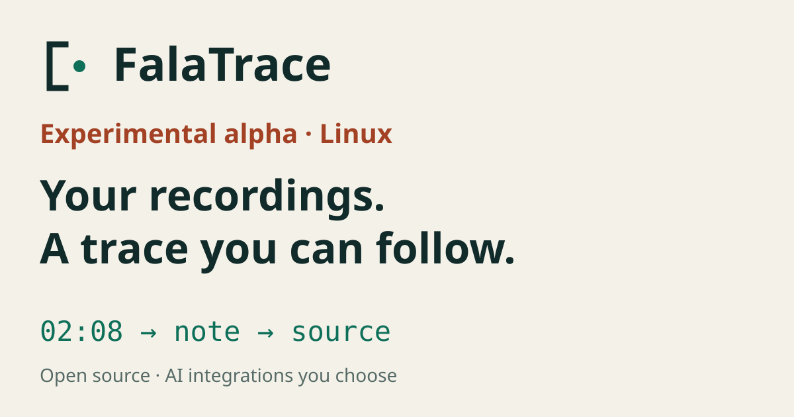

Open citation bracket + a separate source anchor. Static brand ≠ REC.
Experimental alpha · Linux. System fonts; existing outlined wordmark retained. Labels and shapes communicate state. Avatar and favicon share the same optical geometry.
